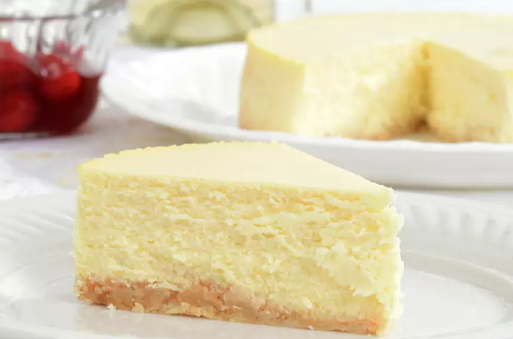

Recette de Cheesecake
Ingredients :
- 250g de speculoos
- 500g de ricotta
- 120g de beurre
- 120g de crème fraîche
- 120g de sucre
- 2 oeufs
- 1 cuillère à soupe de vanille naturel
Preparation : pour 8 personnes
- Émiettez les biscuits spéculoos ou bastogne à l'aide d'un robot mixeur ou d'un rouleau à pâtisserie. Le but est d'obtenir des miettes assez fines mais pas de la poudre. Faites fondre le beurre. Vous pouvez utiliser d'autres types de biscuits, comme des cookies, des petits beurres ou des oreos par exemple.
- Dans un saladier, versez le beurre sur les miettes de biscuits et mélangez-les pour obtenir une pâte granuleuse. Versez cette pâte dans le fond d'un moule à manquer recouvert d'une feuille de papier sulfurisé. Répartissez l'ensemble de façon homogène en faisant légèrement remonter les biscuits sur les bords. Laissez reposer au réfrigérateur pendant 30 minutes environ.
- Mélangez la ricotta avec les œufs légèrement battus, la crème fraîche épaisse, le sucre en poudre et une cuillère à soupe d'arôme de vanille naturel.
- Quand le mélange est bien homogène, versez-le sur les biscuits. Mettez le cheesecake à cuire à four préchauffé à 180°c pendant 45 minutes, puis laissez-le reposer à l'intérieur du four éteint pendant encore une trentaine de minutes. Laissez reposer le cheesecake au moins 3 heures au réfrigérateur avant de le servir.